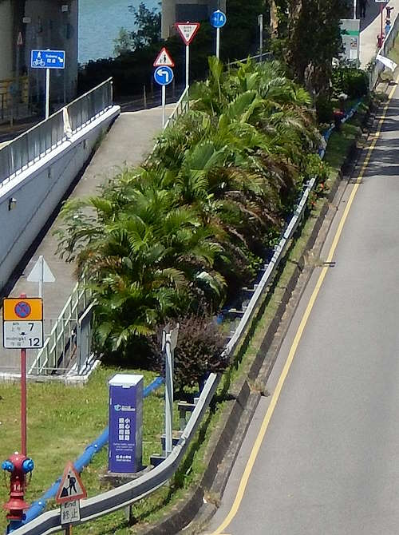
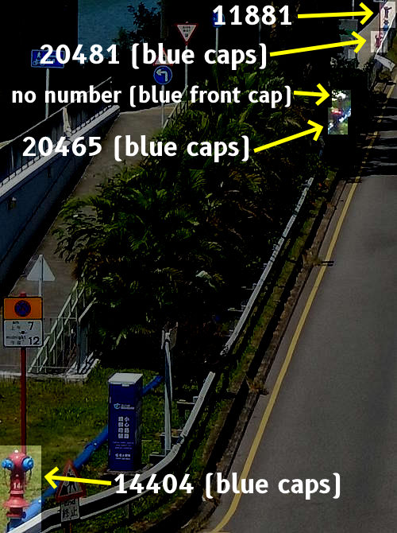
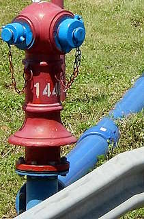
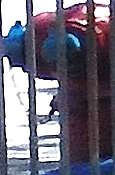
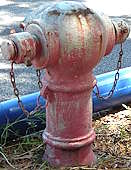
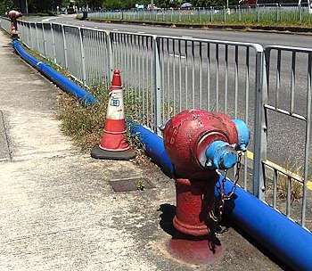
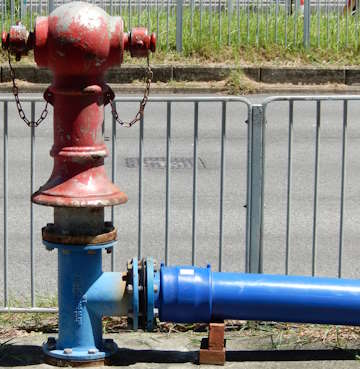

Round Heads on Che Kung Miu Road
[Sources for this page]Sources for this page
- Google | Google Maps (Street View) | https://www.google.com/maps/
How many Round Heads can you see in this photo?
 |
| view from footbridge from The Wai over Che Kung Miu Road, looking east |
| Photo taken in Y2026-M08 |
There are...five!
 |
I don't know why there are five red Round Heads in just 150 metres, but I will share my obsevations here.
20465, the second most western Round Head of the five, was installed before Y2009-M04. It was previously numbered 3035 but it was renumbered 20465 at some point between Y2023-M01 and M05, as with some hydrants around this time. 20481's caps were painted blue at some point between Y2025-M11 and Y2026-M08.
20481, the second most eastern Round Head of the five, was installed at some point between Y2011-M02 and Y2017-M01. I am pretty sure it went by another hydrant number when it was installed, but none of the Google Maps street view captures clearly showed its previous number so I will refer to it as 20481 regardless of the time I am talking about. All its caps were painted blue since its installation at least nine years ago, they are still blue by the time this page was published.
The Round Head with no number, the one in the middle of the five, was also installed at some point between Y2011-M02 and Y2017-M01. But unlike 20481, it was never given a hydrant number, and only its front outlet nozzle cap was painted blue since its installation. It seemed to be neglected over the years as its red paint and front cap's blue paint slowly faded away.
11881, the eastern-most Round Head of the five, was installed at some point between Y2019-M05 and Y2021-M02. All its caps were painted blue since installation, until some point between Y2023-M05 and M12. During that time, the exposed blue pipe appeared and 11881 was raised up. It seems the raising of 11881 was done to allow for a pipe to be connected to its front outlet nozzle, the pipe went into the nearby drainage cover...for some reason. A hole was actually cut in the road-side fence in front of 11881
14404, the western most Round Head of the five, was installed at some point between Y2023-M12 and Y2025-M11, which means it is the newest of the five.
 |
| red Round Head 14404, all caps painted blue |
| Che Kung Miu Road opposite of Chui Tin Street |
| Photo taken in Y2026-M08 |
 |
| red Round Head 20465 (previously 3035), all caps painted blue |
| Che Kung Miu Road next to the north side ramp down to subway NS58 |
| Photo taken in Y2026-M08 |
 |
| An unnumbered red Round Head with faded paint |
| Che Kung Miu Road next to the north side ramp down to subway NS58 |
| Photo taken in Y2026-M08 |
 |
| red Round Head 20481, all caps painted blue, red Round Head 11881 in the distance |
| Che Kung Miu Road opposite of Che Kung Miu temple |
| Photo taken in Y2026-M08 |
 |
| red Round Head 11881 |
| Che Kung Miu Road opposite of Che Kung Miu temple |
| Photo taken in Y2026-M08 |
I don't really know what to make of all these to be honest...The usable hydrant changed from 20465 to 11881, 11881 was raised, 20481 and the no-number had been unusable since their installations at least nine years ago. Will 14404 join them and become another Round Head that will never be usable? I will make an update on this in another decade, maybe. But for now, let us appreciate the peculiar sight of five Round Head installed close to each other, four of which aren't even usable.